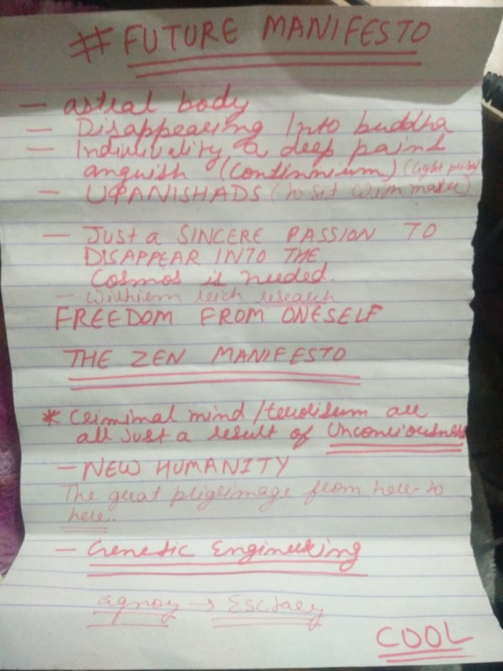

Path of Meditation
Bookmarks from the Bookman
Path of Meditation
THE WAY OF READING
In this chapter osho talks about THE ART OF READING pretty cool
THE SEARCH THE ART OF READING PARA 01
How one can envolve with a reading a Book and evolve through it.
THE AUTHENTIC LONGGING SINGNIFICANCE OF LOVE AND PEACE OF MIND ATTAINED AFTER FULLFILLING
SADGURU MAI TERI PATANG SADGURU the only hope
HEART the closed friend
DONO HAATHO ULICHYE YAHI SAJAN KO KAAM
BEING IN THE WORLD AND YET NOT OF IT
THE FUTURE LONGGINGS

This is somehow the overall of OSHO words !
you may got it or may not but can relate
it's all about freedom from oneself freedom from Unconciousness
its all about THE ZERO he have been talking about.
<3
thanks for reading
Page: 5
Next Page